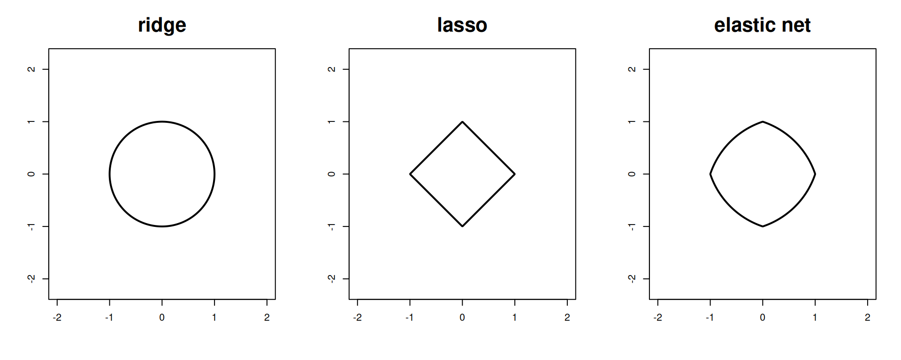

“Se isto for possível, Pois, me contem, Como escrever de novo, Um jornal de ontem” Tom Zé
2.1 Regularização como uma função de perda
2.2 Regularização como uma restrição do espaço paramétrico
É possível entender cada um dos processos de regularização descritos anteriormente como uma restrição do espaço paramétrico dos coeficientes de regressão. Se não fazer seleção é considerer que \(\beta \in \mathbb R^d\), é possível mostrar que - escolhidos os parâmetros de shrinkage - então minimar a soma de quadrados do resíduo penalizada é a mesma coisa que minimizar a soma de quadrado da regressão num espaço paramétrico menor (que depende dos parâmetros de shrinkage escolhidos).
desenhar_espaço_paramétrico =function(alpha, t, título =NULL) {stopifnot("alpha deve estar entre 0 e 1"=all(alpha >=0, alpha <=1),"t deve ser positivo"= t >0 ) F =function(x, y) alpha*(x^2+ y^2- t) + (1-alpha)*(abs(x) +abs(y) - t) x =seq(-2, 2, length =400) y =seq(-2, 2, length =400) g =outer(x, y, F)contour(x, y, g,levels =0,drawlabels =FALSE,lwd =2, asp =1,main = título,cex.main =2 )}par(mfrow =c(1,3))desenhar_espaço_paramétrico(1, 1, "ridge")desenhar_espaço_paramétrico(0, 1, "lasso")desenhar_espaço_paramétrico(1/2, 1, "elastic net")

2.3 Regularização nos MLGs
FS vs shrinkage
1+1
[1] 2
2.4 Estudo Bootstrap
A
Friedman, J. H., Hastie, T., & Tibshirani, R. (2010). Regularization Paths for Generalized Linear Models via Coordinate Descent. Journal of Statistical Software, 33(1), 1–22. Obtido de https://www.jstatsoft.org/index.php/jss/article/view/v033i01
Friedman, J., Hastie, T., Tibshirani, R., et al. (2025). glmnet: Lasso and Elastic-Net Regularized Generalized Linear Models. Stanford University. Obtido de https://glmnet.stanford.edu/
Hoerl, A. E., & Kennard, R. W. (1970). Ridge Regression: Biased Estimation for Nonorthogonal Problems. Technometrics, 12(1), 55–67. Obtido de https://www.jstor.org/stable/1267351
James, G., Witten, D., Hastie, T., & Tibshirani, R. (2021). An Introduction to Statistical Learning: With Applications in R. Springer Texts em Statistics. Springer. Obtido de https://link.springer.com/book/10.1007/978-1-0716-1418-1
Kuhn, M., & Silge, J. (2022). Tidy Modeling with R. O’Reilly Media. Obtido de https://www.tmwr.org/
R Core Team. (2024). R: A Language and Environment for Statistical Computing. Vienna, Austria: R Foundation for Statistical Computing. Obtido de https://www.r-project.org/
Tay, J. K., Narasimhan, B., & Hastie, T. (2023). Elastic Net Regularization Paths for All Generalized Linear Models. Journal of Statistical Software, 106(1), 1–31. Obtido de https://www.jstatsoft.org/article/view/v106i01
Tibshirani, R. (1996). Regression Shrinkage and Selection via the Lasso. Journal of the Royal Statistical Society. Series B (Methodological), 58(1), 267–288. Obtido de https://www.jstor.org/stable/2346178
Zou, H., & Hastie, T. (2005). Regularization and Variable Selection via the Elastic Net. Journal of the Royal Statistical Society. Series B (Statistical Methodology), 67(2), 301–320. Obtido de https://www.jstor.org/stable/3647580